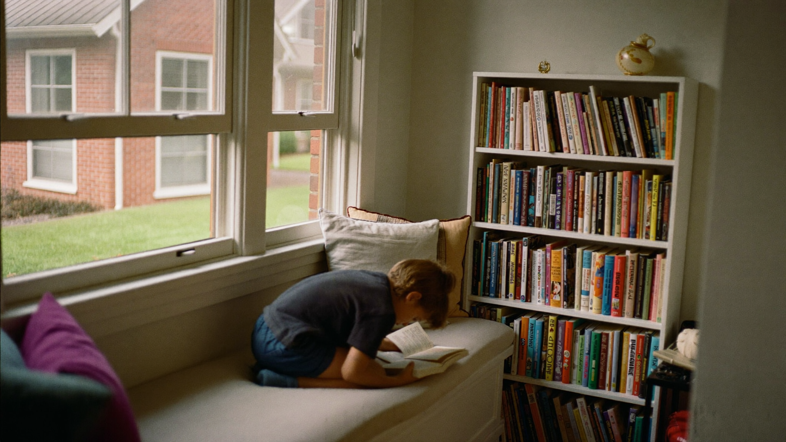

How to Create a Reading Nook Your Child Will Love
By Leslie Dykstra · Certified Early Childhood Specialist · Williamson County, TN

One of the simplest things a parent can do to raise a reader is also one of the most overlooked: create a space in your home where reading feels good. Not a chair in the corner with a reminder to read. A real nook — a corner that belongs to books and your child. As a certified early childhood specialist, I've seen how much a dedicated reading space can shift a child's whole relationship with books.
Environment sends a message. A reading nook for kids says: books are worth a special place. That message lands early and stays long.
Does a reading environment really affect reading habits?
Yes, and meaningfully so. Children are more likely to pick up a book when books are visible, accessible, and associated with comfort. When a child has to hunt through a toy bin to find a book, or sit at a hard chair at a desk to read, the bar to starting feels higher.
A cozy space lowers that bar. It makes reaching for a book the natural thing to do. Over a summer in Franklin or Brentwood, a child who passes their reading nook and picks up a book "just because" is building a habit. That habit carries forward into every school year that follows.
What do you actually need to set one up?
Less than you think. Here's the core:
A defined spot. It could be a closet nook, a corner under the stairs, a window seat, the space under a loft bed, or simply a bean bag chair in a bedroom corner. What matters is that the spot is theirs — not the family couch.
Something cozy to sit on. A floor cushion, a bean bag, a pile of blankets. Children who feel physically comfortable read longer. This doesn't need to be expensive.
Books at eye level. Keep a small selection of books your child can see the covers of, not just the spines. Forward-facing shelves — even a simple rain gutter shelf from a hardware store — make covers visible and inviting. Rotate the selection every few weeks to keep it fresh.
Soft light. Natural window light is wonderful. A small, warm lamp works too. Overhead lighting is fine for homework. For reading-for-pleasure, softer light feels more like a retreat.
Those four things are enough to start. You can add to it as you go.
What makes a reading nook feel special to a child?
Ownership. Let your child choose the color of the cushion. Let them name the nook. Let them pick a few books to display. Let them decorate with a drawing or two. When a child feels like the space is theirs, they want to be in it.
A few additions that many children love:
- A small stuffed animal kept just in the nook (the "reading buddy").
- A little bookplate on the inside covers: "This book belongs to ___."
- A basket for library books, separate from the ones they own.
- A reading log on the wall — a simple chart where they add a sticker for each book they finish.
None of these are required. But when a child feels pride in their reading space, they spend more time there.
How do I connect the nook to an actual reading habit?
The space sets the stage. The habit comes from what you do in it.
A few things that help:
Make it part of a routine. Before quiet time, after lunch, before bed — a predictable "nook time" builds the habit faster than random invitations.
Read together in the nook. Especially for younger children, the nook becomes a shared space for read-alouds. Sitting together with a book in a cozy spot creates a memory that a child returns to — even as a teenager, they often remember those reading moments with warmth.
Let them choose. Within reason, let your child pick what they read in the nook. A child who chose the book is more likely to finish it. If they want to re-read a favorite for the fifteenth time, that's fine. Re-reading builds fluency and comprehension.
Don't turn it into an assignment. The nook loses its magic fast if it becomes the place where required reading happens under protest. Keep it a place they want to be.
For more on building the read-aloud habit itself, see how to read aloud to your child — that post covers the what and how of reading together, while this one covers the where.
What books should go in the nook?
A mix is best. A few favorites they know by heart, a few library books that are new, and one or two that are slightly above where they read independently — those are for reading together.
For children who are just beginning to read on their own, board books and simple phonics readers build confidence. For children who are developing as readers, easy readers and early chapter books belong at eye level. And picture books are always appropriate — they're not just for babies. Some of the richest vocabulary in children's literature lives in picture books.
If you're not sure what level fits your child right now, a free 15-minute conversation with Leslie can help you choose books that match where your child actually is.
Frequently asked questions
How many books should be in the nook at once?
For young children, fewer is often better. Ten to fifteen titles that they can see the covers of beats a hundred books stuffed on a shelf. Rotate every few weeks.
My child won't stay in the nook. What am I doing wrong?
Nothing, probably. Children under five especially may not "settle" for reading the way an older child does. At that age, reading together on the move is fine — in the nook, on the couch, on the floor. The space is still sending a message.
Can the nook be outside?
A summer porch reading spot is a wonderful idea. Shade, a blanket, and a basket of books — children often read longer outside than in. Keep a few books in a weather-safe bin on the porch for easy access.
Want to help your child fall in love with books?
Creating a space is a beautiful first step. If you'd like to talk about what books and reading habits would help your child most this summer, book a free 15-minute call with Leslie. You can also check out the programs designed for ages 3–8 at Little Minds, Big Futures. Where every child's potential takes flight.